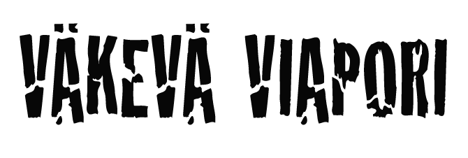

<div class="text-center">
  
</div>
<nav class="navbar navbar-toggleable-md navbar-light bg-faded">
  <button class="navbar-toggler navbar-toggler-right" type="button" data-toggle="collapse" aria-controls="navbarNav" aria-expanded="false" aria-label="Toggle navigation">
    <span class="navbar-toggler-icon"></span>
  </button>
  <a class="navbar-brand" [routerLink]="['']">Väkevä Viapori</a>
  <div class="collapse navbar-collapse" id="navbarNav">
    <ul class="navbar-nav">
      <li class="nav-item">
        <a class="nav-link" [routerLink]="['tapahtumat']">Tapahtumat</a>
      </li>
    </ul>
  </div>
</nav>
